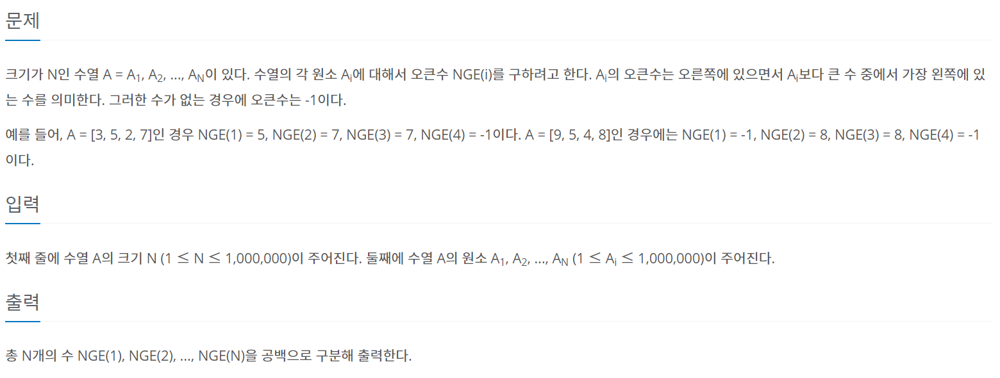
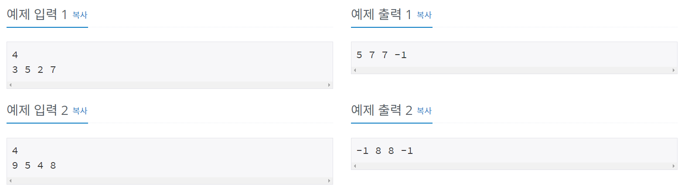
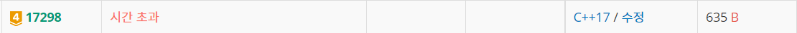
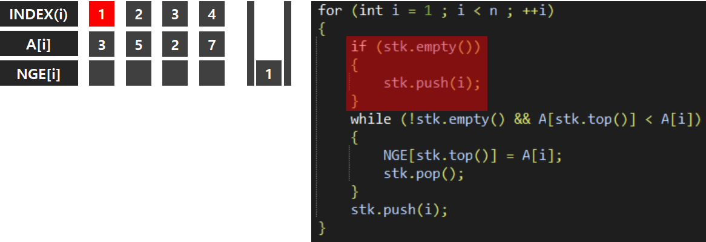
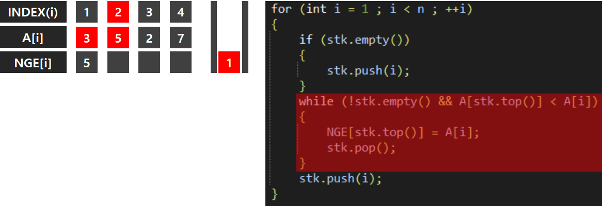
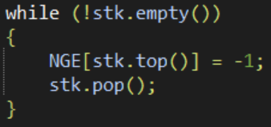
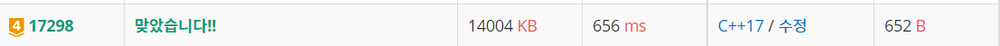

#INFO
난이도 : GOLD4
알고리즘 유형 : 자료구조.스택(STACK)
∞ 문제 출처 : https://www.acmicpc.net/problem/17298
 
#SOLVE
처음에는 이중 for문과 스택을 같이 사용해서 시도해 보았다.
#include <iostream>
#include <string>
#include <stack>
using namespace std;
int main()
{
int N;
cin >> N;
int ary[N];
int solve[N];
for (int i = 0 ; i < N ; ++i)
{
int tmp;
cin >> tmp;
ary[i] = tmp;
}
stack<int> stk;
for (int i = 0 ; i < N - 1 ; ++i)
{
for (int j = i + 1 ; j < N ; ++j)
{
if (ary[i] < ary[j])
{
stk.push(ary[j]);
}
}
if (stk.empty())
{
solve[i] = -1;
}
else
{
while(!(stk.size() == 1))
{
stk.pop();
}
solve[i] = stk.top();
stk.pop();
}
}
solve[N-1] = -1;
for (int i = 0 ; i < N ; ++i)
{
cout << solve[i] << " ";
}
return 0;
}테스트 케이스는 통과한 듯 했는데 이중 for문이라 그런지 시간 초과가 발생했다.

두 번째 시도는 for문의 중첩을 지우고 스택만을 활용해 풀어 보았다. 우선, 스택이 비어있으면 스택에 인덱스 값을 집어넣는다.

다음으로, A[stk.top()] (3) 보다 A[i] (5) 가 큰지 비교한다. 5가 더 크기에, NGE[1] 의 오큰수는 5가 된다.

while 반복부를 작성한 이유는 다음과 같다. 만약 3의 오큰수를 찾고 싶다고 한다면, 우측의 원소들 (5,2,7) 중에서 처음 만난 3보다 큰 수가 무조건 오큰수가 된다. 즉, 2와 7은 탐색할 필요가 없다는 것이다.
따라서 3 오른쪽 원소를 탐색하면서 3보다 큰 수를 만났다면 , 처음 만난 3보다 큰 수를 NGE[3의 인덱스] 에 집어 넣고, 3에 대한 탐색은 끝났으니 스택을 pop 하는 것이다.
만약 위의 과정을 모두 끝마친 후에도, 스택에 원소가 남아있다면 해당 인덱스의 오른쪽에는 오큰수가 존재하지 않는다는 의미이니, -1을 대입한다.

#CODE
#include <iostream>
#include <stack>
#include <vector>
using namespace std;
int main()
{
int n;
cin >> n;
vector<int> A(n);
vector<int> NGE(n);
for (int i = 0 ; i < n ; ++i)
{
cin >> A[i];
}
stack<int> stk;
stk.push(0); // 예외처리
for (int i = 1 ; i < n ; ++i)
{
if (stk.empty())
{
stk.push(i);
}
while (!stk.empty() && A[stk.top()] < A[i])
{
NGE[stk.top()] = A[i];
stk.pop();
}
stk.push(i);
}
// 반복을 마친 뒤에도, 스택이 비어있지 않은 경우
while (!stk.empty())
{
NGE[stk.top()] = -1;
stk.pop();
}
for (int i = 0 ; i < n ; ++i)
{
cout << NGE[i] << " ";
}
return 0;
}